Digital simulation with uncertain numbers
Feeding models with intervals and p-boxes
Marco De Angelis, Scott Ferson
Created by Marco De Angelis
thinking Prudent
analysis
Good
engineering
engineering
Honorable
failure
failure
Negligence
Dumb luck
“Uncertainties appear everywhere! … When using a mathematical model, careful attention must be given to uncertainties in the model.”Richard Feynman
“Uncertainty quantification is the missing piece of the puzzle in large scale computations.”Tim Barth
“We have to make the best model we possibly can, and then not trust it.”Robert Costanza
Epistemic uncertainty
- Arises from incomplete knowledge
- Incertitude arises from
- limited sample size
- measurement error
- use of surragate data
- Reducible with empirical effort
Aleatory uncertainty
- Arises from natural stochasticity
- Variability arises from
- spatial variation
- temporal fluctuations
- manufactoring/material differences
- Not reducible by empirical effort
They must be treated differently
- Variability should be modeled as randomness with the methods of probability theory
- Incertitude should be modeled as ignorance with constraint or interval analysis
Propagating incertitude
Suppose
A is in [2, 4]
B is in [3, 5]
What can be said about A + B?
!
[5,9]
\[ a \sim N(2,4) \]
\[ b \sim N(7,3) \]
a + b = ?
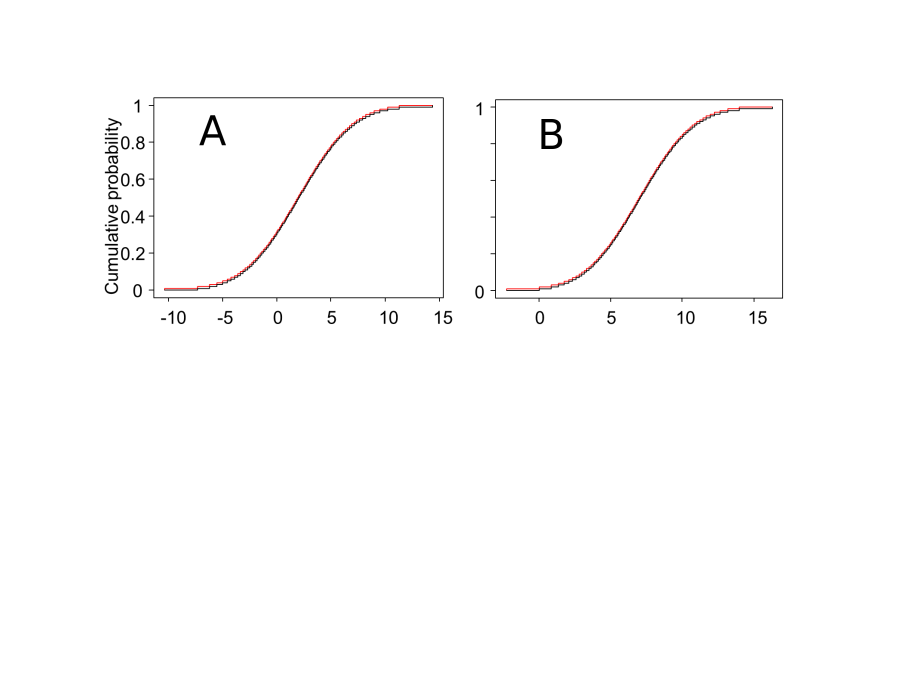
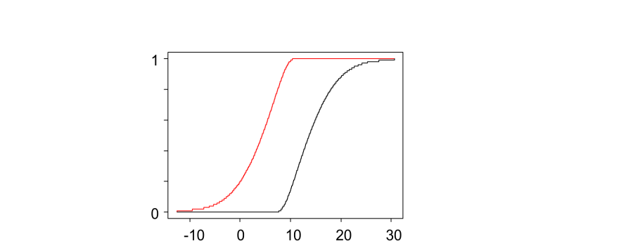
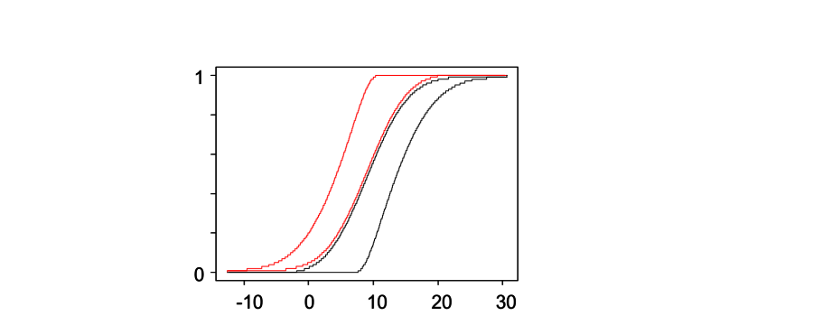
\[ [ max \left \{ F(x)+G(y)-1, 0 \right \},\ min \left \{F(x), G(y) \right \}] \]
Credible uncertainty analysis
- Designers are likelier to use modeling results if they know the outputs are good enough
- Program managers could focus research on areas where uncertainty is intolerable
Uncertainty
- Artifactual uncertainty
- Variability arises from
- too few polynomial terms
- numerical instability
- can be reduced by a better analysis
- Artifactual uncertainty
- genuine unpredictability due to input uncertainty
- cannot be reduced by a better analysis
- only by more information, data or assumptions
Uncertainty propagation
- We want the prediction to 'break down' if that's what should happen
- But we don't want artifactual uncertainty
- Numerical instabilities
- Wrapping effect
- Dependence problem
- Repeated parameters
Repeated parameters
\[ a = \left[ 1,\ 2 \right] \]
\[ b = \left[ 2,\ 3 \right] \]
\[ c = \left[ -2,\ 5 \right] \]
\[ z = a \times \left( b + c \right) \]
\[ b + c = \left[ 0,\ 8 \right] \]
\[ z = \left[ 0,\ 16 \right] \]
\[ z = a \times b + a \times c \]
\[ a \times b = \left[ 2,\ 6 \right] \]
\[ a \times c = \left[ -4,\ 10 \right] \]
\[ z = \left[ -2,\ 16 \right] \]
Inflated uncertainty
Topology delusion
- Recursive expressions with > 1 variables
- Chained models with > 1 variables
- Inverse problems
Inflated uncertainty
Uncertain numbers
Not uniform!
Math with uncertain numbers
- All standard mathematical operations
- Arithmetic (+, -, ×, ^, min, max)
- Logical operations (and, or, not, if, etc.)
- Transformations (exp, ln, sin, tan, abs, sqrt, etc.)
- Magnitude comparisons (<, ≤, >, ≥, etc.)
- Other operations (nonlinear ODEs, finite-element methods)
- Faster than Monte Carlo
- Guaranteed to bound answer
- Optimal solutions often easy to compute
- Arithmetic (+, -, ×, ^, min, max)
- Logical operations (and, or, not, if, etc.)
- Transformations (exp, ln, sin, tan, abs, sqrt, etc.)
- Magnitude comparisons (<, ≤, >, ≥, etc.)
- Other operations (nonlinear ODEs, finite-element methods)
Probability bounds arithmetic
What's the sum of A + B?
Cartesian product
| A + B independence | A ∈ [1,3] p3 = 1/3 | A ∈ [2,4] p3 = 1/3 | A ∈ [3,5] p3 = 1/3 |
| B ∈ [2,8] q3 = 1/3 |
A+B ∈ [3,11] prob = 1/9 |
A+B ∈ [4,12] prob = 1/9 |
A+B ∈ [5,13] prob = 1/9 |
| B ∈ [6,10] q3 = 1/3 |
A+B ∈ [7,13] prob = 1/9 |
A+B ∈ [8,14] prob = 1/9 |
A+B ∈ [9,15] prob = 1/9 |
| B ∈ [8,12] q3 = 1/3 |
A+B ∈ [9,15] prob = 1/9 |
A+B ∈ [10,16] prob = 1/9 |
A+B ∈ [11,17] prob = 1/9 |
- Rigorous
- Best possible
Codes' universe
Python
Fortran
Analytical
\[ mx^2 + cx + k = 0 \]
Hard case: black-box function
- Some models or functions can't be decomposed into simple arithmetic operations
- Secrecy
- Legacy codes
- Just too complex
- If we can only query the function by evaluating it for particular inputs, it's called a black box
- How can we propagate interval uncertainty through a black-box model?
\[ P [V>v_t] = p_F \]
\[ v_t \]
\[ v \]
Random slicing
- Can be used for black-boxes to make imprecise estimations
- Produces "samples" for the P-box
- Propagation of incertitude still needed
- Accelerating strategies
- Low discrepancy sampling
- Importance sampling
- Dependency among Pboxes can be included
Random slicing
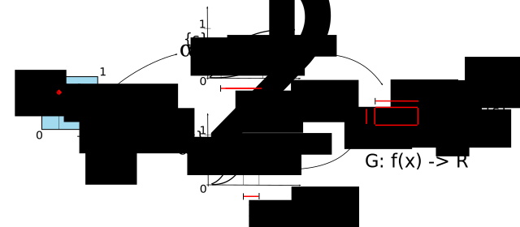
i = 1, 2, ..., D# Dimension
k = 1, 2, ..., N# Number of samples (slices)
X = (Xi)# ind. Probability Boxes
for k in range(0, N)
rk = random([D])# Random number in [0,1)D
for i in range(0,D)
Ei = slice.pbox(Xi; rk)# Slice the P-Box
E{K} = (Ei)# Cartesian composition (copulas)
G{K} = blackboxprop(E{K})# Push the focal element through
GN = (G{K})# DS Structure of the output
Mh(GN) = 1/N * sum(Gk**h)# Compute moments / quantiles
Line sampling method
- Propagates small probabilities through black-boxes
- Don’t need to know model, but have to query it
- "Sample" along a principal direction
- Strategies exist for good "guesses" of the direction
- E.g.: sacrifice first batch
Line sampling
Line sampling
i = 1, 2, ..., D# Dimension
l = 1,2, ..., L# Number of lines
m = 1,2, ..., M# Number of samples per line
x = (xi)# Vector of random variables
a = (ai)# Important direction
n = Tx # Map marginals into D standard normal variables
for l in range(0,L):
n{l} = n[ : , l ]# extract sample for the each line
n{l}_c = lambda c: + n{l} - (n{l}・a) a + c a# parametrize the space down to one dimension
gl = runBlackbox(n{l}) # run the black-box on each sample
find c* such that g(n{l}_c*) = 0 # find the limit state surface on each line
p{l} = Φ(-c*) # compute probability on each line
p = E[p{l=1,..,L}]
Adaptive algorithm
Line sampling
- Number of evaluation on each line varies
- Line index is not necessarily sequential
- Direction can change during loop execution
- If limit state surface is not met during root search
- Dynamic allocation of line indexes for flat surfaces
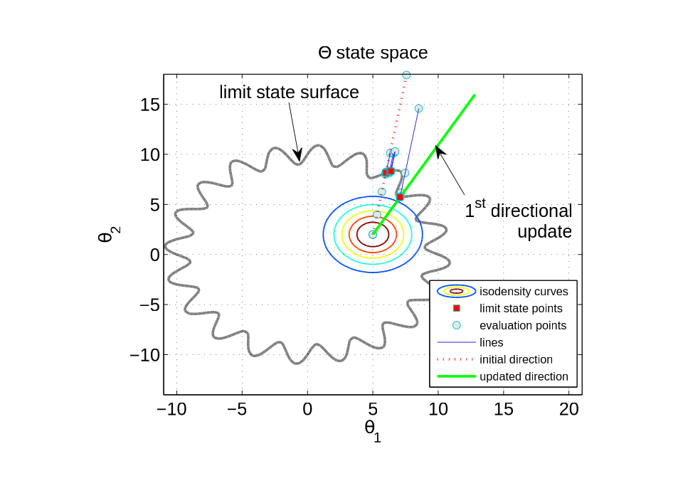
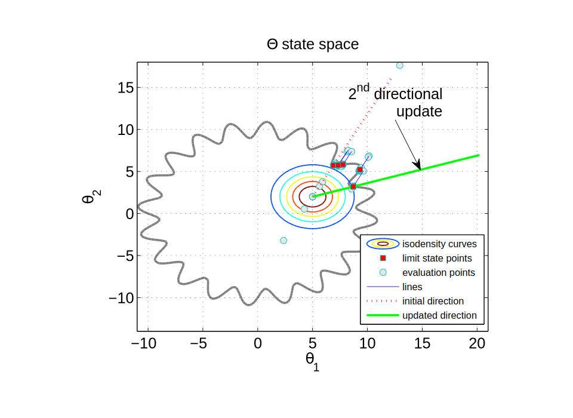
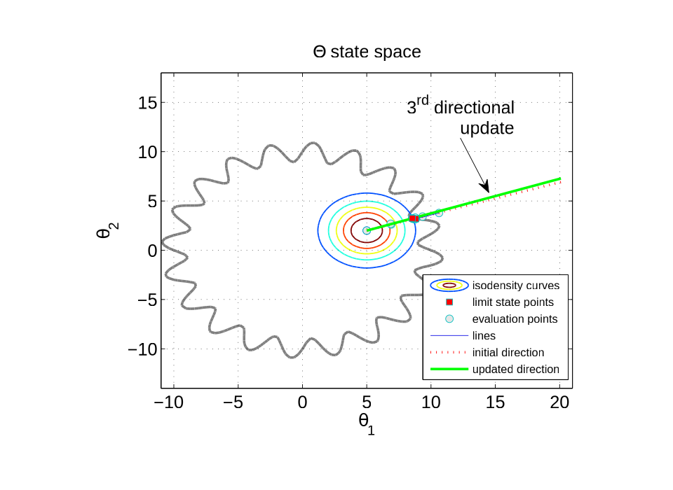


Cauchy-deviate method
- Propagates intervals through black-box model
- Don't need to know model, but have to query it
- "Sample" from around interval
- Points not necessarily inside the interval!
- Scale results to get an asymptotically correct estimate of the interval uncertainty of the output
Cauchy deviate
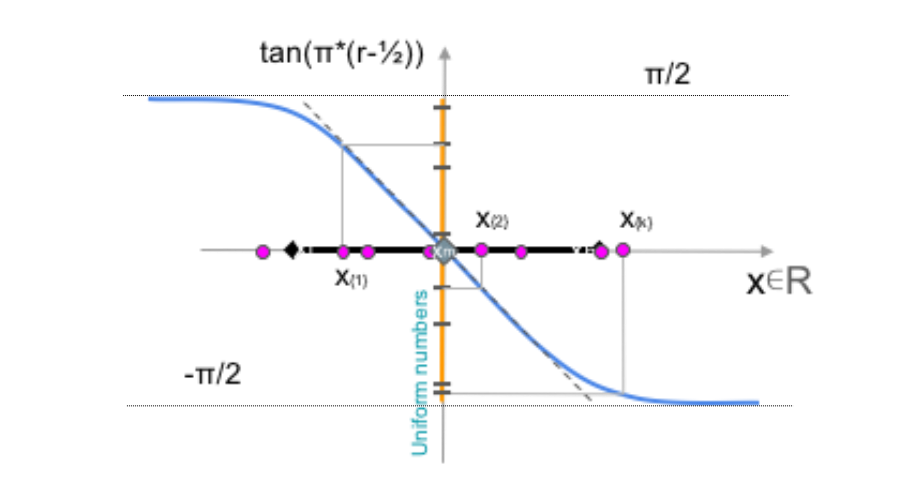Cauchy deviate
i = 1, 2, ..., D# Dimension of the function
k = 1, 2, ..., N# Number of samples
X = (Xi) # Vector of intervals
xm = (xl + xh)/2
gm = runBlackbox(xm)
for k in range(0, N):
rk = random([D])# Random number in [0,1)D
ck = tan(π*(rk-½))# Sample the Cauchy dist
zk = ck/||ck||# Normalise samples
xk = xm + zk# Map to physical space
gk = runBlackbox(xk)# run the black box for e.g. a single output
δk = ||ck||*(gk - gm)# Compute the error
solve @d N/2 - sumk(1/(1+δk/d))# Maximum likelihood estimator for scale parameter
G = [gm-d, gm+d]# Compute approximate interval of the output
Limitations of the method
- Intervals narrow relative to the nonlinearity
- Based on a linearization approximation
- Function almost linear OR uncertainties small
- Could combine with subinterval reconstitution
- Most efficient when dimensionality is high
- Asymptotically correct, but not rigorous
- Only handles interval uncertainty
Performance
- Depends on the number of samples, not inputs
- Works just as well for 1000 input variables as 10
- Similar in performance to Monte Carlo
- Need about 200 samples to obtain 20% relative accuracy of half-width of output range
- With fewer samples, we’d get lower accuracy, but we can compensate for this by scaling by sqr(N), which works under the linearity assumption
Uncertainty pre-compiler
- Intrusive UQ cannot be used on black-box codes
- But many codes and simulations are not "black"
- We know all the computations inside, CRYSTAL
- A compiler that translates C/Fortran code to insinuate appropriate (intrusive) UQ code
Application
- The quantity (a + b)^2 + c + b + a can be reduced to its optimal form \[ (a + b + ½)^2 + c – ¼ \]
- Use the reducing template \[u + u^2 = (u + ½)^2 – ¼ \] but first rearrange the order of the summed terms and let u be the quantity (a + b)
Strategy
- Parse the formula into a binary expression tree
- Apply each reducing template against every subexpression of the tree
- Count the remaining repeated uncertain parameters
- Repeat until the number is zero or no longer decreases
V&V
- Verification (checking the math and code)
- Code testing
- Interval analysis, probability bounds analysis
- Units/dimension checking
- Validation (checking against data)
- Rarely actually have much data
Goals
- Objectively measure the conformance of predictions with empirical data
- Use this measure to characterize the reliability of other predictions
Validation metric
- A measure of the mismatch between the observed data and the model’s predictions
- Low value means a good match
- High value means they disagree
- Distance between prediction and data
Desirable properties of such metric
- Expressed in physical units
- Generalizes deterministic comparisons
- Reflects full distribution
- Not too sensitive to long tails
- Mathematical metric
- Unbounded (you can be really off)
Area metric
- "Distance" between two distributions
- Physical units
- Smallest mean absolute difference of deviates
\[ min\ E \left| X_F - Y_n \right| \]
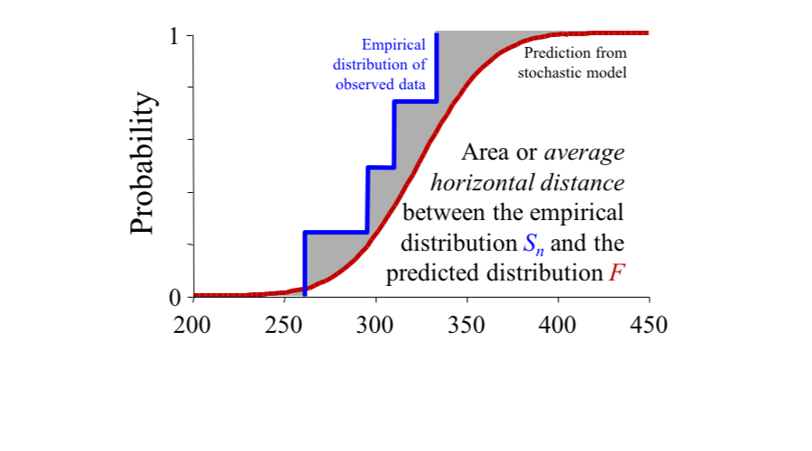Epistemic uncertainty in predictions
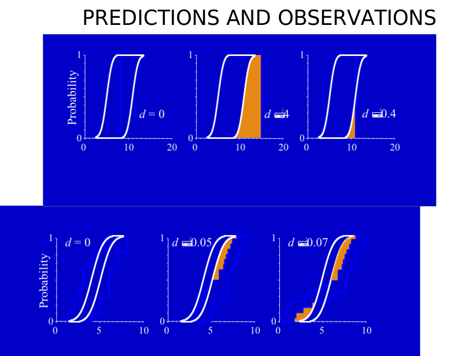How should we compare intervals?

Validation for intervals
- Validation measure is the smallest difference
- Overlapping intervals match perfectly
- Validity is distinct from precision
Epistemic uncertainty in predictions and observations
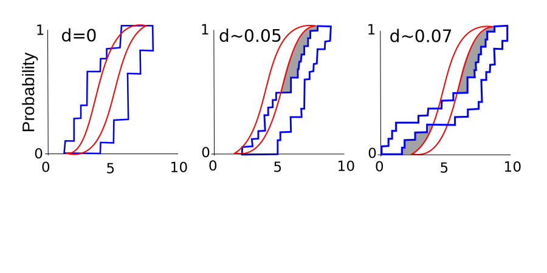Large FEM
Example #1
| Uncertain parameters |
Distribution | Quantity |
|---|---|---|
| 1 | N(0.1, 0.001) | Column’s strength (GPa) |
| 2-193 | Unif(0.36, 0.44) | Cross-section (m) |
| 194-212 | LN(35.0, 12.25) | Young’s modulus (GPa) |
| 213 - 231 | LN(2.5, 0.0625) | Material’s density (kg/dm3 ) |
| 232 - 244 | LN(0.25, 0.000625) | Poisson’s ratio |
De Angelis, M., et al., 2015.
Advanced line sampling for efficient robust reliability analysis. Structural safety;
doi.org/10.1016/j.strusafe.2014.10.002
Maintenance scheduling
Example #2
\[ \frac{\text{d} a}{\text{d}N}=C \left( \Delta K \right)^m; \]
\[ \Delta K = Y(a)\ M(a)\ \Delta S\ \sqrt{\pi a}; \]
\[ \Delta K = Y(a)\ M(a)\ \Delta S\ \sqrt{\pi a}; \]
\[ \frac{\text{d} a}{\text{d}N}=C \left( \Delta K \right)^m; \]
\[ \Delta K = Y(a)\ M(a)\ \Delta S\ \sqrt{\pi a}; \]
\[ T_M = 50\ \text{years} \]
\[ \Delta K = Y(a)\ M(a)\ \Delta S\ \sqrt{\pi a}; \]
\[ T_M = 50\ \text{years} \]
| \[ \theta_i \] | Distribution | \[ E [\theta_i] \] | \[Std [\theta_i] \] |
|---|---|---|---|
| \[ \nu \left[ 10^{6} \text{cycles/year} \right] \] | Lognormal | [7.125, 7.875] | [0.475, 0.525] |
| \[ a_0\ \left[ \text{mm} \right] \] | Lognormal | [0.119, 0.131] | [0.043, 0.047] |
| \[ \Delta S\ \left[ \text{MPa} \right] \] | Gamma | [7.410, 8.190] | [0.095, 0.105] |
| \[ C^{*}\ \left[10^{-13} \text{ mm/cycles} \right] \] | Lognormal | [2.375, 2.625] | [0.877, 0.969] |
| \[ m^{*} \] | Normal | [2.850, 3.150] | [0.038, 0.042] |
| \[ a_f\ \left[ \text{mm} \right] \] | Gumbel | [0.950, 1.050] | [0.019, 0.021] |
| \[ a/c \] | Lognormal | [0.380, 0.420] | [0.152, 0.168] |
| \[ d\ \left[ \text{mm} \right] \] | Gamma | [771.4, 852.6] | [7.695, 8.505] |
| \[ b\ \left[ \text{mm} \right] \] | Gamma | [30.02, 33.18] | [3.040, 3.360] |
| \[ h\ \left[ \text{mm} \right] \] | &Gamma | [7.980, 8.820] | [0.665, 0.735] |
| \[ \phi\ \left[ \text{deg} \right] \] | Gamma | [33.25, 36.75] | [1.900, 2.100] |
De Angelis, M., et al., 2016.
Forced Monte Carlo simulation strategy for the design of maintenance plans with multiple inspections ASCE-ASME Journal of Risk and Uncertainty in Engineering Systems, Part A: Civil Engineering;
doi.org/10.1061/AJRUA6.0000868


| N | \[ \text{min}\ C_M \] | \[ t^{\text{insp}*}\ \left[ \text{years} \right] \] |
|---|---|---|
| 5 | \[ 3.86\ 10^6 \] | {7, 14, 20, 30, 34} |
| 7 | \[ 3.74\ 10^6 \] | {4, 9, 14, 20, 27, 35, 42} |
| 9 | \[ 3.68\ 10^6 \] | {2, 7, 11, 14, 19, 24, 29, 36, 47} |
| 12 | \[ 3.82\ 10^6 \] | {2, 4, 9, 11, 18, 22, 26, 32, 37, 45, 50} |
| 15 | \[ 3.83\ 10^6 \] | {0.5, 4, 7, 9, 11, 14, 16, 19, 23, 25, 29, 34, 39, 46, 50} |